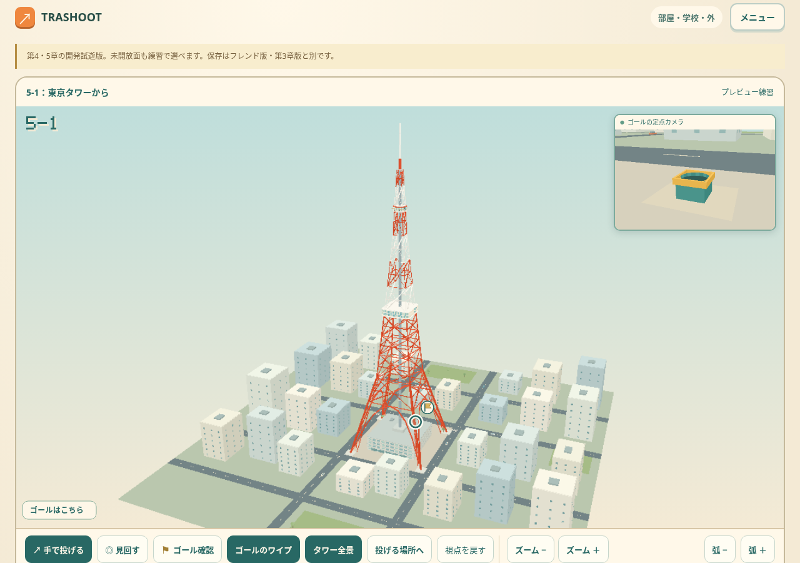
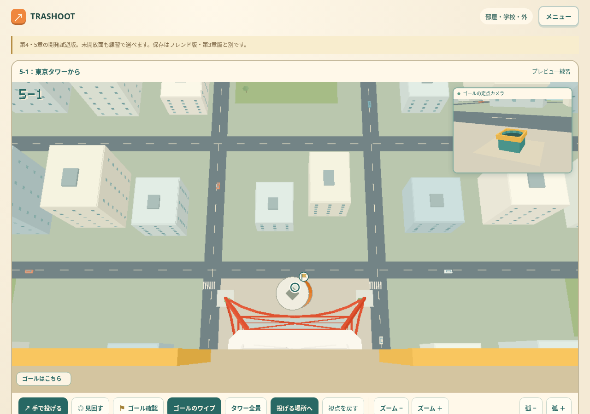
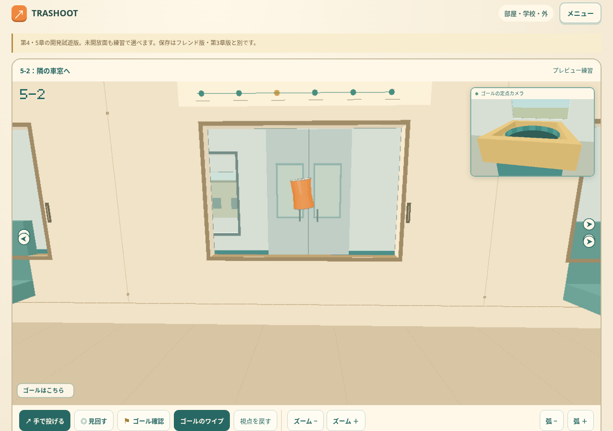
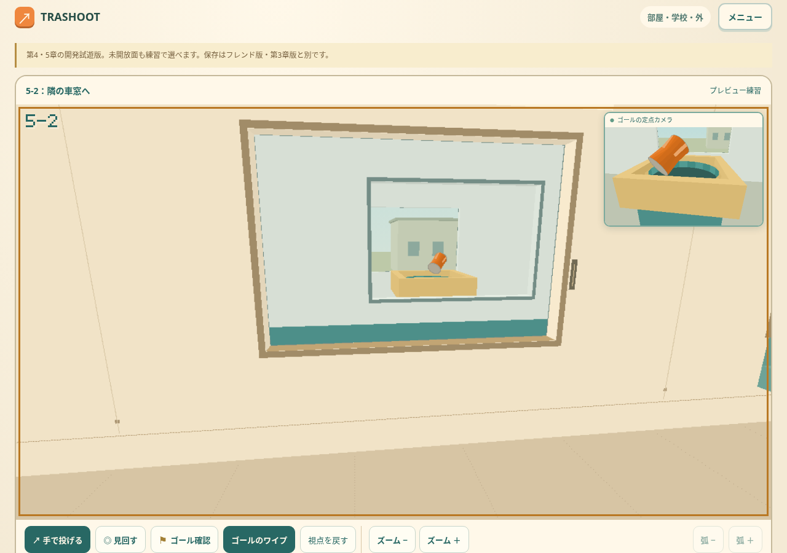

TRASHOOT — 東京タワーと隣の車窓
第5章の開発試遊版。下の画像は実際のゲーム画面です。

5-1：「タワー全景」で四脚・鉄骨・展望台を見渡せます。塔は333m、周囲の建物は15〜55mを基準にしています。
「投げる場所へ」で250mの展望台に戻ります。低い弧で、はるか下のごみ箱へ。ゴール側は右上のワイプで確認できます。
5-2：自分の開いた窓から、並走する電車の窓を通して車内の箱へ。座席・窓枠・ドア・路線図を備えた車内になりました。
線路・枕木・架線は循環してずっと続きます。隣の電車との速度差で窓がずれるため、タイミングと少し先を狙う角度が大切。窓枠・車体・座席に当たると跳ね返ります。右ボタンドラッグや「見回す」で視点を動かせます。下側の「ズーム −／＋」「弧 −／＋」も使えます。